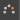

您可以在片段上激活“重影”(Ghosting)来查看单个动画片段的进度。这样，您可以在轨迹上查看选定动画片段的开始位置和结束位置，同时这对匹配姿势或阻塞动画非常有用。
例如，以下图像显示了将动画球体一分为二的动画片段。该片段的后半部分已沿轨迹方向进一步移动，使这两个片段之间产生间隙。
注： 由于仅对第二个片段激活“重影”(Ghosting)，因此只有该片段的片段名称旁边将出现  图标。
在此示例中，仅对第二个片段激活片段“重影”(Ghosting)，即：显示第二部分动画的一半片段。在播放第一个片段时，将显示第二个片段的开始位置的重影。
注： 此过程介绍如何显示选定
片段的重影。如果要查看整个
轨迹的重影，请参见上文中的
“在时间编辑器中查看轨迹重影”步骤。时间编辑器的默认重影是动画的骨架或根对象。如果要使用非默认重影预先可视化动画，请参见
创建自定义片段重影。
查看选定片段的重影
- 在时间编辑器中的片段上单击鼠标右键。
- 选择（在时间编辑器片段(Clip)上下文菜单. 也可以从时间编辑器菜单栏中选择。
片段上（片段的名称旁边）将显示“重影”(Ghost)图标 。
重影的颜色与对应的片段相同。若要自定义片段重影颜色，请在属性编辑器中片段信息的“层”(Layer)区域中选择新颜色。